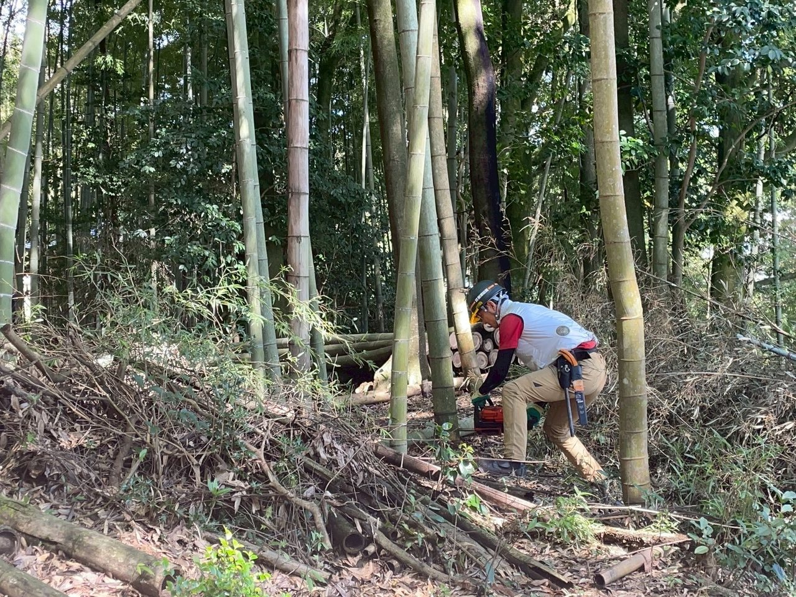
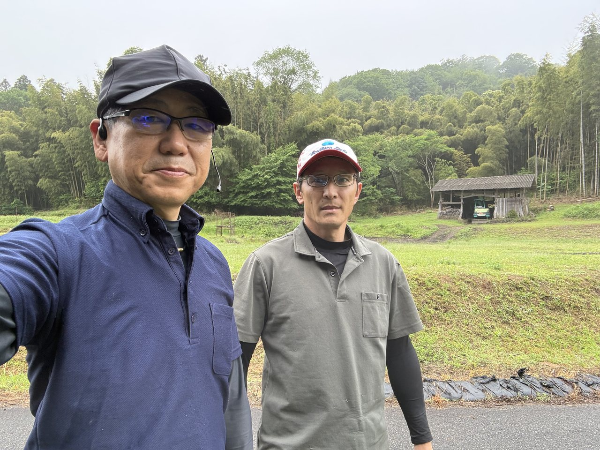

現場で働いてきた一人の人間が、いま考えていること。
私は、広島県で現場の仕事をしています。竹の伐採や搬出、林業、里山の整備。体を動かす、泥くさい仕事です。
その現場には、いつも「これ、もっと楽にならないかな」と思う仕事があります。紙への記録。同じ内容を何度も書き写す作業。人手が足りなくて、後回しになっていく事務仕事。
私がAIに興味を持ったのは、新しい技術だからではありません。目の前の現場を、少しでも楽にしたかったからです。それだけです。

「あれ、やっといて。」
そう一言つぶやくだけで、
面倒な事務が、
いつのまにか終わっている。
そんな当たり前を、現場に持ち込みたいと思っています。大事なのは、AIを使うこと自体ではありません。現場の人が、本来の仕事に集中できること。技術は、あくまでそのための道具です。主役は、いつも現場で汗をかいている人の側にあります。
正直に言えば、これは完成したサービスではありません。今は、試作と検証を繰り返している最中です。それでも、現場で本当に役立つものを作りたい——その思いだけは、ずっと変わりません。
その最初のプロトタイプとして取り組んでいるのが、会計ソフトへの入力を、話しかけるだけで手伝ってくれる仕組みです。「ガソリン代、3千円、今日」——そう伝えるだけで、正しく記録される。パソコンや帳簿が苦手な人ほど、助かるはずだと思っています。記帳の中身は、連携する税理士が確認するので、任せて不安になることもありません。
これは、目指したい世界の入口にすぎません。ここで得たものを、少しずつ、ほかの現場仕事へ広げていくつもりです。
一度で完成、
とは思っていません。
これからも現場を回り、いろんな社長さんや職人さんの「困った」を聞きながら、この考えも、仕組みも、ゆっくり育てていきます。私自身、まだまだ学んでいる途中です。うまくいかないことも、たくさんあると思います。
それでも、同じように「この仕事、楽にならないかな」と感じている方がいたら、ぜひ一度、話を聞かせてください。一緒に考えるところから始めたいです。
